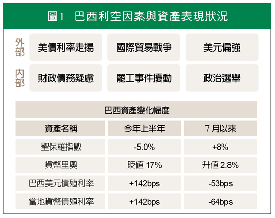
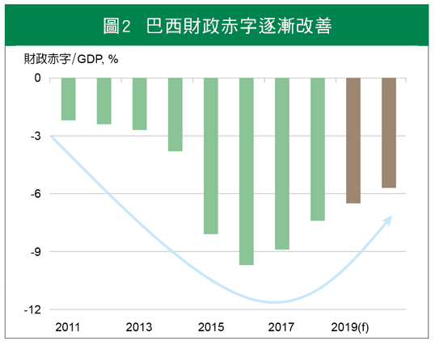
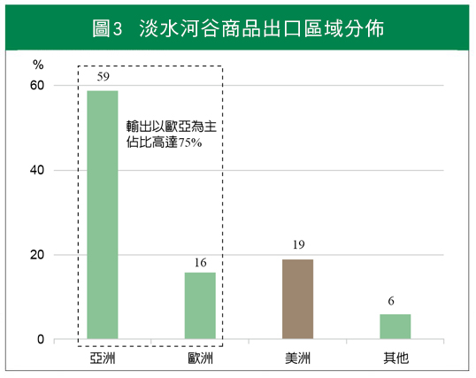
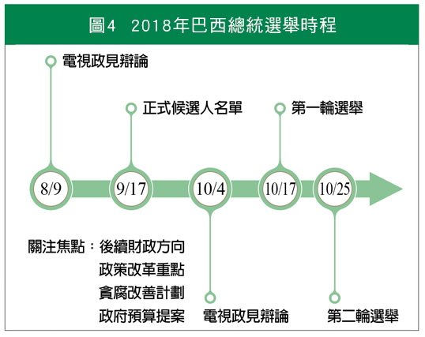
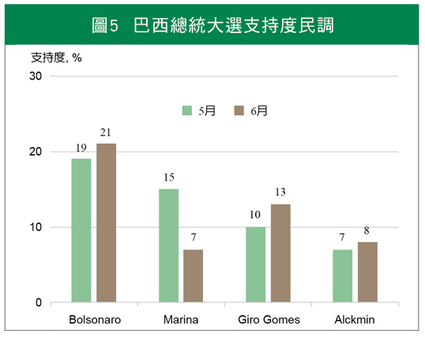
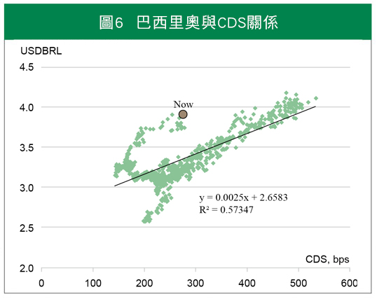

期待巴西森巴舞響起
內憂外患使巴西各資產表現偏弱，復甦步調下股市仍有表現空間
今年新興市場面對美元及美債利率揚升壓力，國際資金怪流亂竄。觸碰「赤字」禁忌的巴西，政府陷於平衡預算與人民感受的兩難，內憂外患困境使巴西各資產表現偏弱(見圖1)。分析美國對巴西貿易政策影響尚屬可控，財政赤字漸趨改善，短線市場似過度反應，經濟維持復甦步調下，後續巴西股市仍有表現空間。

註：資料截至2018/7/20
資料來源：Bloomberg，國泰世華銀投研團隊彙整
一、內憂外患的巴西煩惱
今年初美債利率急速走揚，及4月下旬美元轉強，驅動國際資金調節壓力。巴西債券殖利率走高，資金出走使其貨幣驟貶，進一步拖累股市表現。無獨有偶，5月底卡車司機罷工事件，癱瘓巴西經濟活動近一週的時間，加重股債匯頹勢。目前投資人對巴西的擔憂，包括財政赤字疑慮、川普關稅影響及政治不確定性，本文將就此三個面向探討。
二、經濟復甦帶動收入，財政赤字漸趨改善
2016年來，經濟改善復甦帶動財政收入增加。今年1至5月，財政赤字較去年同期減少55%至164.5億里奧，預估赤字將持續改善(見圖2)。財政主要收入來源，為企業與個所稅稅收，及貨物的關稅收入。
去年6月取消燃料補貼，汽油價格高漲，卡車司機包圍主要道路，直到官方答應補貼油價，雙方達妥協約定。抗爭活動雖停止，再次補貼使債務疑慮上升，後續撙節政策將受牽絆。官方陷入人民感受與財政平衡兩難，減少社會支出有助改善財政狀況，卻削減民間消費力，引發抗爭，刪減社會福利實為雙面刃。
以2016年官方燃料補貼時期的233億里奧推估，預估今年補貼占政府支出比重，可能將增加為1.7至2.0%，與2017年的1.5%差距不大，燃料補貼對政府支出的影響尚屬可控範圍。

資料來源：Bloomberg
三、鋼品輸出以歐亞為主，關稅影響尚屬可控
另一威脅來自美國貿易關稅。觀察巴西2017年貿易出口結構，近8成商品輸出至歐亞地區，其中亞洲區占比近半，若從巴西最大原物料出口商淡水河谷資料來看，整體美洲占比約19%，產品出口75%以歐亞地區為主(見圖3)。
目前美國限制巴西對美鋼品出口量，預估巴西對美鋼品出口將減少2成，整體出口減少約4%，影響不致太大。巴西輸出鋁品至美國將課10%關稅，鋁品占總出口權重僅1.4%，其中輸出至美國金額在3億美元以下，對整體影響較微。

資料來源：Bloomberg
四、新任總統人選漸明朗，政策能見度仍低
10月份總統大選(見圖4)，原呼聲最高的前總統盧拉(Lula) 判決入獄，現任總統泰梅爾(Temer)民調僅1%，引發市場擔憂。執政黨主張改善赤字，但養老金改革引起民眾多次抗議，取消燃料補貼，埋下5月底罷工事件的種子。根據巴西當地媒體調查，民眾仍傾向支持財政撙節，僅政策調整需採循序漸進的方式。
最新總統大選民調(見圖5)，最高為波索納洛(Bolsonaro)，軍人出身，被稱為巴西版川普。外交傾向親近美國，主張打擊貪腐及治安問題， 較獲年輕族群擁戴，安撫民眾降低內部政治事件發生，避免抗爭事件再度發生。
後續擾動在於新任領導者方向，目前政策能見度仍低，未來若釋出可能大幅擴增政府支出訊息，巴西資產短線將面臨震盪。預期新政府也不願見國際資金大幅出走，致匯率大幅貶值，使金融資產受到影響。

資料來源：Bloomberg

資料來源：Poder
五、原物料需求回溫，有助巴西經濟復甦
上半年國際資金調節，來自市場對巴西債務的信心疑慮，使貨幣大幅貶值，觀察巴西CDS與匯率關係，目前里奧貶值幅度有過度反應(見圖6)。
短線中美貿易衝突使避險情緒升溫，美債殖利率偏區間整理，預期美公債利率將緩步上揚。6月聯準會雖透露今年升息4碼訊息，隨歐洲央行貨幣政策退場進程，將限縮後續美元強度，可望紓緩美元對新興匯率的壓力。
上半年全球景氣稍弱，及川普貿易戰影響，拖累基本金屬價格表現，預期事件不致演變為系統風險，後續基本金屬價格可望稍回穩。巴西原物料主要出口對象為中國，隨中國經濟打底階段，原物料需求可望漸趨穩定，加上中國供給側改革，提供巴西原物料類股支撐。
巴西銀行貸放量回升，有助銀行獲利表現，金融股表現可期。巴西央行預估全年通膨預估維持4%左右，短線貨幣政策偏中性看待，但降息循環已告一段落。
就業持續改善，帶動民間消費成長，長線經濟維持復甦步調。預期今年經濟成長率維持2.5%水準，明年可達2.7至3.0%，2017年企業獲利成長仍可達10%。下半年景氣回穩預期，經濟展望仍正向。美國對巴西的貿易政策影響尚屬可控，財政赤字逐漸改善下，後續巴西股市仍有表現空間。

資料來源：Bloomberg
【揭露事項與免責聲明】
本報告為國泰世華銀行（下稱“本公司”）提供尊貴理財客戶之參考資料，並非針對特定客戶所作的投資建議，且在本報告撰寫過程中，並未考量讀者個別的財務狀況與需求，故本報告所提供的資訊無法適用於所有讀者。
本報告係根據本公司所取得的資訊加以彙集及研究分析，本公司並不保證各項資訊之完整性及正確性。本報告中所提出之意見係為本報告出版當時的意見，邇後相關資訊或意見若有變更，本公司將不會另行通知。本公司亦無義務持續更新本報告之內容或追蹤研究本報告所涵蓋之主題。本報告中提及的標的價格、價值及收益隨時可能因各種本公司無法控制之政治、經濟、市場等因素而產生變化。本報告中之各項預測，均係基於對目前所得資訊作合理假設下所完成，所以並不必然實現。本報告不得視為買賣有價證券或其他金融商品的要約或要約之引誘。
國泰金融集團（下稱“本集團”）所屬各公司可能個別基於特定目的且針對特定人士出具研究報告、提供口頭或書面的市場看法或投資建議（下稱“提供資訊”），鑑於提供資訊之單位、時間、對象及目的不同，本報告與本集團其他單位所提供資訊可能有不一致或相牴觸之情事；本集團所屬公司從事各項金融業務，包括但不限於銀行、保險、證券經紀、承銷、自有資金投資、資產管理、證券投資信託等。本集團各公司對於本報告所涵蓋之標的可能有投資或其他業務往來關係，各公司從事交易之方向亦可能與本報告不一致，讀者應審慎評估自身投資風險，自行決定投資方針，不應以前述不一致或相抵觸為由，主張本公司或本集團其他成員有侵害讀者權益之情事。